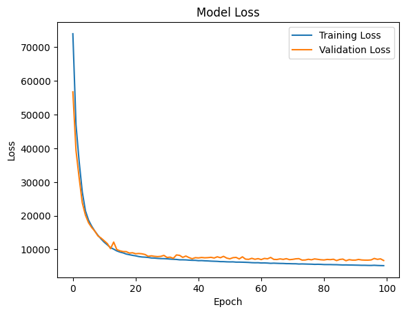
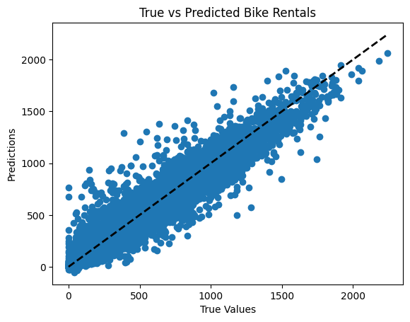

import pandas as pd
import tensorflow as tf
from tensorflow import keras
from tensorflow.keras import layers
bikes = pd.read_csv('https://raw.githubusercontent.com/byui-cse/cse450-course/master/data/bikes.csv')import pandas as pd
import numpy as np
from sklearn.model_selection import train_test_split
from sklearn.preprocessing import StandardScaler
from sklearn.metrics import mean_squared_error, r2_score, mean_absolute_error, median_absolute_error
import tensorflow as tf
from tensorflow import keras
from tensorflow.keras import layers
import matplotlib.pyplot as plt
# Convert 'dteday' to datetime and extract features
bikes['dteday'] = pd.to_datetime(bikes['dteday'])
bikes['year'] = bikes['dteday'].dt.year
bikes['month'] = bikes['dteday'].dt.month
bikes['day'] = bikes['dteday'].dt.day
bikes.drop(columns=['dteday'], inplace=True) # Drop the original date column
# Bin the windspeed into categories
wind_bins = [-np.inf, 0, 5, 10, 15, 20, np.inf] # 6 edges
wind_labels = ['Very Calm', 'Calm', 'Light', 'Moderate', 'Strong', 'Very Strong'] # 6 labels
bikes['windspeed_bin'] = pd.cut(bikes['windspeed'], bins=wind_bins, labels=wind_labels)
# One-hot encode categorical variables
bikes = pd.get_dummies(bikes, columns=['weathersit', 'season', 'windspeed_bin'], drop_first=True)
# Define features and target variable
X = bikes.drop(columns=['casual', 'registered']) # Use 'casual' and 'registered' as targets or combine them
y = bikes['casual'] + bikes['registered'] # Predict total bike rentals
# Split the dataset
X_train, X_test, y_train, y_test = train_test_split(X, y, test_size=0.2, random_state=42)
# Feature scaling
scaler = StandardScaler()
X_train_scaled = scaler.fit_transform(X_train)
X_test_scaled = scaler.transform(X_test)
# Build the neural network model
model = keras.Sequential([
layers.Input(shape=(X_train_scaled.shape[1],)), # Fix the shape to a tuple
layers.Dense(128, activation='relu'),
layers.Dense(64, activation='relu'),
layers.Dense(32, activation='relu'),
layers.Dense(1) # Output layer for regression
])
# Compile the model
model.compile(optimizer='adam', loss='mean_squared_error', metrics=['mae'])
# Fit the model
history = model.fit(X_train_scaled, y_train, epochs=100, batch_size=32, validation_split=0.2, verbose=1)
# Predictions
y_pred = model.predict(X_test_scaled)
# Evaluate the model
r_squared = r2_score(y_test, y_pred)
rmse = np.sqrt(mean_squared_error(y_test, y_pred))
mae = mean_absolute_error(y_test, y_pred)
medae = median_absolute_error(y_test, y_pred)
# Calculate percentage metrics
within_5 = np.mean(np.abs((y_test - y_pred.flatten()) / y_test) < 0.05) * 100
within_10 = np.mean(np.abs((y_test - y_pred.flatten()) / y_test) < 0.10) * 100
within_20 = np.mean(np.abs((y_test - y_pred.flatten()) / y_test) < 0.20) * 100
# Display metrics
print(f'Within 5%: {within_5:.2f}%')
print(f'Within 10%: {within_10:.2f}%')
print(f'Within 20%: {within_20:.2f}%')
print(f'R^2: {r_squared:.4f}')
print(f'RMSE: {rmse:.4f}')
print(f'Mean Absolute Error: {mae:.4f}')
print(f'Median Absolute Error: {medae:.4f}')
# Optional: Plot training history
plt.plot(history.history['loss'], label='Training Loss')
plt.plot(history.history['val_loss'], label='Validation Loss')
plt.title('Model Loss')
plt.ylabel('Loss')
plt.xlabel('Epoch')
plt.legend()
plt.show()
# Optional: Plotting true vs predicted values
plt.scatter(y_test, y_pred)
plt.xlabel('True Values')
plt.ylabel('Predictions')
plt.title('True vs Predicted Bike Rentals')
plt.plot([y_test.min(), y_test.max()], [y_test.min(), y_test.max()], 'k--', lw=2) # Diagonal line
plt.show()Epoch 1/100
2250/2250 ━━━━━━━━━━━━━━━━━━━━ 17s 5ms/step - loss: 94008.7812 - mae: 213.8355 - val_loss: 56755.8125 - val_mae: 163.3681
Epoch 2/100
2250/2250 ━━━━━━━━━━━━━━━━━━━━ 17s 3ms/step - loss: 51385.0859 - mae: 152.2182 - val_loss: 39359.5312 - val_mae: 131.1403
Epoch 3/100
2250/2250 ━━━━━━━━━━━━━━━━━━━━ 7s 3ms/step - loss: 38197.6562 - mae: 127.0671 - val_loss: 31272.4316 - val_mae: 113.2189
Epoch 4/100
2250/2250 ━━━━━━━━━━━━━━━━━━━━ 9s 3ms/step - loss: 29036.8242 - mae: 110.0518 - val_loss: 23879.6562 - val_mae: 99.6817
Epoch 5/100
2250/2250 ━━━━━━━━━━━━━━━━━━━━ 9s 2ms/step - loss: 22288.7402 - mae: 96.7721 - val_loss: 20201.7676 - val_mae: 92.0027
Epoch 6/100
2250/2250 ━━━━━━━━━━━━━━━━━━━━ 6s 3ms/step - loss: 18887.6895 - mae: 88.3834 - val_loss: 17910.0430 - val_mae: 84.9720
Epoch 7/100
2250/2250 ━━━━━━━━━━━━━━━━━━━━ 9s 2ms/step - loss: 17288.1309 - mae: 83.8529 - val_loss: 16512.3672 - val_mae: 83.3527
Epoch 8/100
2250/2250 ━━━━━━━━━━━━━━━━━━━━ 6s 3ms/step - loss: 15945.4023 - mae: 81.2483 - val_loss: 15425.8799 - val_mae: 79.2470
Epoch 9/100
2250/2250 ━━━━━━━━━━━━━━━━━━━━ 9s 2ms/step - loss: 14440.8750 - mae: 77.2829 - val_loss: 14004.0928 - val_mae: 76.2418
Epoch 10/100
2250/2250 ━━━━━━━━━━━━━━━━━━━━ 5s 2ms/step - loss: 13453.8398 - mae: 74.9311 - val_loss: 13373.7520 - val_mae: 74.5782
Epoch 11/100
2250/2250 ━━━━━━━━━━━━━━━━━━━━ 5s 2ms/step - loss: 12088.5840 - mae: 71.6098 - val_loss: 12560.8809 - val_mae: 72.4592
Epoch 12/100
2250/2250 ━━━━━━━━━━━━━━━━━━━━ 6s 3ms/step - loss: 11420.5605 - mae: 69.6990 - val_loss: 11726.7988 - val_mae: 70.4112
Epoch 13/100
2250/2250 ━━━━━━━━━━━━━━━━━━━━ 8s 2ms/step - loss: 10431.7109 - mae: 66.3950 - val_loss: 10241.0605 - val_mae: 65.1133
Epoch 14/100
2250/2250 ━━━━━━━━━━━━━━━━━━━━ 7s 3ms/step - loss: 10195.6133 - mae: 65.5549 - val_loss: 12191.0137 - val_mae: 72.9270
Epoch 15/100
2250/2250 ━━━━━━━━━━━━━━━━━━━━ 4s 2ms/step - loss: 9646.0137 - mae: 63.7586 - val_loss: 9964.0488 - val_mae: 65.3271
Epoch 16/100
2250/2250 ━━━━━━━━━━━━━━━━━━━━ 6s 2ms/step - loss: 9244.8506 - mae: 62.6889 - val_loss: 9596.3486 - val_mae: 63.3917
Epoch 17/100
2250/2250 ━━━━━━━━━━━━━━━━━━━━ 9s 2ms/step - loss: 9032.7139 - mae: 61.5658 - val_loss: 9373.7051 - val_mae: 62.9089
Epoch 18/100
2250/2250 ━━━━━━━━━━━━━━━━━━━━ 6s 3ms/step - loss: 8287.9355 - mae: 59.2909 - val_loss: 9349.9121 - val_mae: 62.0332
Epoch 19/100
2250/2250 ━━━━━━━━━━━━━━━━━━━━ 9s 2ms/step - loss: 8437.7842 - mae: 59.4650 - val_loss: 8921.0527 - val_mae: 60.2710
Epoch 20/100
2250/2250 ━━━━━━━━━━━━━━━━━━━━ 7s 3ms/step - loss: 8161.5894 - mae: 58.4594 - val_loss: 9019.6904 - val_mae: 61.3562
Epoch 21/100
2250/2250 ━━━━━━━━━━━━━━━━━━━━ 4s 2ms/step - loss: 7939.7866 - mae: 57.5805 - val_loss: 8727.2295 - val_mae: 60.3362
Epoch 22/100
2250/2250 ━━━━━━━━━━━━━━━━━━━━ 5s 2ms/step - loss: 7711.1709 - mae: 56.7002 - val_loss: 8803.8096 - val_mae: 59.9136
Epoch 23/100
2250/2250 ━━━━━━━━━━━━━━━━━━━━ 5s 2ms/step - loss: 7628.1357 - mae: 56.3436 - val_loss: 8708.5596 - val_mae: 59.5629
Epoch 24/100
2250/2250 ━━━━━━━━━━━━━━━━━━━━ 10s 2ms/step - loss: 7751.9443 - mae: 56.5072 - val_loss: 8497.3555 - val_mae: 58.5232
Epoch 25/100
2250/2250 ━━━━━━━━━━━━━━━━━━━━ 5s 2ms/step - loss: 7569.9717 - mae: 55.8504 - val_loss: 7964.8267 - val_mae: 56.4554
Epoch 26/100
2250/2250 ━━━━━━━━━━━━━━━━━━━━ 4s 2ms/step - loss: 7275.1099 - mae: 54.8592 - val_loss: 8105.6011 - val_mae: 56.5456
Epoch 27/100
2250/2250 ━━━━━━━━━━━━━━━━━━━━ 7s 3ms/step - loss: 7244.7676 - mae: 54.7700 - val_loss: 7956.0054 - val_mae: 56.2610
Epoch 28/100
2250/2250 ━━━━━━━━━━━━━━━━━━━━ 9s 2ms/step - loss: 7159.8398 - mae: 54.5214 - val_loss: 7875.5635 - val_mae: 55.8663
Epoch 29/100
2250/2250 ━━━━━━━━━━━━━━━━━━━━ 7s 3ms/step - loss: 7269.5547 - mae: 54.3730 - val_loss: 7944.6455 - val_mae: 56.2397
Epoch 30/100
2250/2250 ━━━━━━━━━━━━━━━━━━━━ 9s 2ms/step - loss: 7371.2246 - mae: 54.8639 - val_loss: 8237.8887 - val_mae: 57.1884
Epoch 31/100
2250/2250 ━━━━━━━━━━━━━━━━━━━━ 6s 2ms/step - loss: 7291.8228 - mae: 54.4897 - val_loss: 7620.4551 - val_mae: 54.7664
Epoch 32/100
2250/2250 ━━━━━━━━━━━━━━━━━━━━ 10s 2ms/step - loss: 7174.9409 - mae: 53.9998 - val_loss: 7718.6450 - val_mae: 55.3951
Epoch 33/100
2250/2250 ━━━━━━━━━━━━━━━━━━━━ 4s 2ms/step - loss: 6648.4375 - mae: 52.3546 - val_loss: 7366.9731 - val_mae: 53.8601
Epoch 34/100
2250/2250 ━━━━━━━━━━━━━━━━━━━━ 6s 3ms/step - loss: 6966.7520 - mae: 53.3299 - val_loss: 8366.4795 - val_mae: 57.9833
Epoch 35/100
2250/2250 ━━━━━━━━━━━━━━━━━━━━ 9s 2ms/step - loss: 6905.7363 - mae: 53.2057 - val_loss: 8247.6084 - val_mae: 57.6272
Epoch 36/100
2250/2250 ━━━━━━━━━━━━━━━━━━━━ 7s 3ms/step - loss: 6917.5361 - mae: 52.8440 - val_loss: 7654.7622 - val_mae: 55.5257
Epoch 37/100
2250/2250 ━━━━━━━━━━━━━━━━━━━━ 9s 2ms/step - loss: 6934.1577 - mae: 52.8302 - val_loss: 8044.9316 - val_mae: 55.9332
Epoch 38/100
2250/2250 ━━━━━━━━━━━━━━━━━━━━ 6s 3ms/step - loss: 6765.5444 - mae: 52.1404 - val_loss: 7590.7500 - val_mae: 54.5253
Epoch 39/100
2250/2250 ━━━━━━━━━━━━━━━━━━━━ 8s 2ms/step - loss: 6851.0298 - mae: 52.4172 - val_loss: 7243.0200 - val_mae: 52.9940
Epoch 40/100
2250/2250 ━━━━━━━━━━━━━━━━━━━━ 7s 3ms/step - loss: 6670.6943 - mae: 52.0454 - val_loss: 7559.6748 - val_mae: 54.5246
Epoch 41/100
2250/2250 ━━━━━━━━━━━━━━━━━━━━ 9s 2ms/step - loss: 6521.6631 - mae: 51.5593 - val_loss: 7487.4248 - val_mae: 54.3772
Epoch 42/100
2250/2250 ━━━━━━━━━━━━━━━━━━━━ 7s 3ms/step - loss: 6559.4902 - mae: 51.4045 - val_loss: 7617.7686 - val_mae: 54.9671
Epoch 43/100
2250/2250 ━━━━━━━━━━━━━━━━━━━━ 4s 2ms/step - loss: 6367.9341 - mae: 50.8182 - val_loss: 7526.7686 - val_mae: 54.5815
Epoch 44/100
2250/2250 ━━━━━━━━━━━━━━━━━━━━ 5s 2ms/step - loss: 6559.6655 - mae: 51.7426 - val_loss: 7569.5400 - val_mae: 54.9070
Epoch 45/100
2250/2250 ━━━━━━━━━━━━━━━━━━━━ 6s 2ms/step - loss: 6417.8442 - mae: 50.7502 - val_loss: 7664.9868 - val_mae: 55.0344
Epoch 46/100
2250/2250 ━━━━━━━━━━━━━━━━━━━━ 10s 3ms/step - loss: 6344.4297 - mae: 50.8448 - val_loss: 7460.6436 - val_mae: 54.1680
Epoch 47/100
2250/2250 ━━━━━━━━━━━━━━━━━━━━ 10s 2ms/step - loss: 6247.7671 - mae: 50.3353 - val_loss: 7818.5020 - val_mae: 55.9433
Epoch 48/100
2250/2250 ━━━━━━━━━━━━━━━━━━━━ 9s 2ms/step - loss: 6204.1211 - mae: 50.1615 - val_loss: 7547.7690 - val_mae: 54.1911
Epoch 49/100
2250/2250 ━━━━━━━━━━━━━━━━━━━━ 5s 2ms/step - loss: 6267.2783 - mae: 50.3267 - val_loss: 7952.5513 - val_mae: 56.3571
Epoch 50/100
2250/2250 ━━━━━━━━━━━━━━━━━━━━ 5s 2ms/step - loss: 6261.6953 - mae: 50.0347 - val_loss: 7440.2422 - val_mae: 54.2415
Epoch 51/100
2250/2250 ━━━━━━━━━━━━━━━━━━━━ 5s 2ms/step - loss: 6208.0264 - mae: 50.0245 - val_loss: 7216.1548 - val_mae: 52.8564
Epoch 52/100
2250/2250 ━━━━━━━━━━━━━━━━━━━━ 7s 3ms/step - loss: 6157.5781 - mae: 50.0823 - val_loss: 7561.5913 - val_mae: 54.2079
Epoch 53/100
2250/2250 ━━━━━━━━━━━━━━━━━━━━ 5s 2ms/step - loss: 6213.0225 - mae: 49.9452 - val_loss: 7640.3867 - val_mae: 54.6321
Epoch 54/100
2250/2250 ━━━━━━━━━━━━━━━━━━━━ 6s 2ms/step - loss: 6391.1675 - mae: 50.5878 - val_loss: 7182.6851 - val_mae: 52.8689
Epoch 55/100
2250/2250 ━━━━━━━━━━━━━━━━━━━━ 10s 2ms/step - loss: 6063.4688 - mae: 49.4140 - val_loss: 7812.6187 - val_mae: 56.0077
Epoch 56/100
2250/2250 ━━━━━━━━━━━━━━━━━━━━ 6s 3ms/step - loss: 6216.2383 - mae: 49.8247 - val_loss: 7126.6548 - val_mae: 52.9757
Epoch 57/100
2250/2250 ━━━━━━━━━━━━━━━━━━━━ 9s 2ms/step - loss: 6195.8184 - mae: 49.3497 - val_loss: 7063.4927 - val_mae: 52.3413
Epoch 58/100
2250/2250 ━━━━━━━━━━━━━━━━━━━━ 6s 3ms/step - loss: 5995.4858 - mae: 49.2399 - val_loss: 7366.8857 - val_mae: 53.8413
Epoch 59/100
2250/2250 ━━━━━━━━━━━━━━━━━━━━ 4s 2ms/step - loss: 6083.6904 - mae: 49.1703 - val_loss: 7082.5713 - val_mae: 52.2204
Epoch 60/100
2250/2250 ━━━━━━━━━━━━━━━━━━━━ 6s 3ms/step - loss: 6002.0923 - mae: 49.0177 - val_loss: 7275.1396 - val_mae: 52.5360
Epoch 61/100
2250/2250 ━━━━━━━━━━━━━━━━━━━━ 5s 2ms/step - loss: 5851.8970 - mae: 48.6496 - val_loss: 7000.1157 - val_mae: 51.6861
Epoch 62/100
2250/2250 ━━━━━━━━━━━━━━━━━━━━ 4s 2ms/step - loss: 5887.6104 - mae: 48.7236 - val_loss: 7335.1250 - val_mae: 53.3217
Epoch 63/100
2250/2250 ━━━━━━━━━━━━━━━━━━━━ 8s 3ms/step - loss: 5895.4814 - mae: 48.5117 - val_loss: 7220.5088 - val_mae: 52.5406
Epoch 64/100
2250/2250 ━━━━━━━━━━━━━━━━━━━━ 5s 2ms/step - loss: 5601.2412 - mae: 47.7754 - val_loss: 7631.4229 - val_mae: 54.0168
Epoch 65/100
2250/2250 ━━━━━━━━━━━━━━━━━━━━ 5s 2ms/step - loss: 5934.6611 - mae: 48.9750 - val_loss: 7052.0781 - val_mae: 51.7833
Epoch 66/100
2250/2250 ━━━━━━━━━━━━━━━━━━━━ 10s 2ms/step - loss: 5897.6602 - mae: 48.6399 - val_loss: 7020.7339 - val_mae: 51.8193
Epoch 67/100
2250/2250 ━━━━━━━━━━━━━━━━━━━━ 6s 3ms/step - loss: 5765.2153 - mae: 48.1892 - val_loss: 7201.7632 - val_mae: 52.4088
Epoch 68/100
2250/2250 ━━━━━━━━━━━━━━━━━━━━ 5s 2ms/step - loss: 5761.0342 - mae: 48.2244 - val_loss: 7056.0850 - val_mae: 51.8182
Epoch 69/100
2250/2250 ━━━━━━━━━━━━━━━━━━━━ 6s 2ms/step - loss: 5637.1841 - mae: 47.7585 - val_loss: 7260.6221 - val_mae: 53.0521
Epoch 70/100
2250/2250 ━━━━━━━━━━━━━━━━━━━━ 5s 2ms/step - loss: 5817.1104 - mae: 48.2608 - val_loss: 6975.5571 - val_mae: 52.1577
Epoch 71/100
2250/2250 ━━━━━━━━━━━━━━━━━━━━ 5s 2ms/step - loss: 5724.0439 - mae: 48.0134 - val_loss: 7055.9321 - val_mae: 51.8861
Epoch 72/100
2250/2250 ━━━━━━━━━━━━━━━━━━━━ 6s 3ms/step - loss: 5655.2900 - mae: 47.6047 - val_loss: 7220.3472 - val_mae: 52.2917
Epoch 73/100
2250/2250 ━━━━━━━━━━━━━━━━━━━━ 9s 2ms/step - loss: 5850.3491 - mae: 48.2816 - val_loss: 7268.6890 - val_mae: 52.7843
Epoch 74/100
2250/2250 ━━━━━━━━━━━━━━━━━━━━ 6s 3ms/step - loss: 5741.7100 - mae: 48.0787 - val_loss: 6845.6177 - val_mae: 51.1606
Epoch 75/100
2250/2250 ━━━━━━━━━━━━━━━━━━━━ 10s 3ms/step - loss: 5518.3940 - mae: 47.3945 - val_loss: 6870.5107 - val_mae: 51.2475
Epoch 76/100
2250/2250 ━━━━━━━━━━━━━━━━━━━━ 9s 2ms/step - loss: 5596.7407 - mae: 47.4335 - val_loss: 7082.8438 - val_mae: 52.0534
Epoch 77/100
2250/2250 ━━━━━━━━━━━━━━━━━━━━ 6s 3ms/step - loss: 5488.5698 - mae: 46.9379 - val_loss: 6935.4858 - val_mae: 51.4731
Epoch 78/100
2250/2250 ━━━━━━━━━━━━━━━━━━━━ 5s 2ms/step - loss: 5505.6318 - mae: 47.1739 - val_loss: 7192.8208 - val_mae: 53.0839
Epoch 79/100
2250/2250 ━━━━━━━━━━━━━━━━━━━━ 5s 2ms/step - loss: 5553.7183 - mae: 47.3999 - val_loss: 7066.5444 - val_mae: 52.4266
Epoch 80/100
2250/2250 ━━━━━━━━━━━━━━━━━━━━ 6s 3ms/step - loss: 5478.3301 - mae: 46.7957 - val_loss: 6945.2666 - val_mae: 51.9226
Epoch 81/100
2250/2250 ━━━━━━━━━━━━━━━━━━━━ 5s 2ms/step - loss: 5285.5830 - mae: 46.3139 - val_loss: 6881.3188 - val_mae: 51.3135
Epoch 82/100
2250/2250 ━━━━━━━━━━━━━━━━━━━━ 6s 2ms/step - loss: 5500.3242 - mae: 47.2244 - val_loss: 7037.6665 - val_mae: 52.3097
Epoch 83/100
2250/2250 ━━━━━━━━━━━━━━━━━━━━ 5s 2ms/step - loss: 5392.3853 - mae: 46.7008 - val_loss: 6983.0801 - val_mae: 51.9735
Epoch 84/100
2250/2250 ━━━━━━━━━━━━━━━━━━━━ 12s 3ms/step - loss: 5318.0176 - mae: 46.3088 - val_loss: 7089.5845 - val_mae: 52.4603
Epoch 85/100
2250/2250 ━━━━━━━━━━━━━━━━━━━━ 5s 2ms/step - loss: 5358.6147 - mae: 46.4874 - val_loss: 6699.6411 - val_mae: 50.6966
Epoch 86/100
2250/2250 ━━━━━━━━━━━━━━━━━━━━ 5s 2ms/step - loss: 5359.3779 - mae: 46.4456 - val_loss: 7031.2090 - val_mae: 51.8090
Epoch 87/100
2250/2250 ━━━━━━━━━━━━━━━━━━━━ 6s 3ms/step - loss: 5382.0874 - mae: 46.4471 - val_loss: 7135.6519 - val_mae: 52.4535
Epoch 88/100
2250/2250 ━━━━━━━━━━━━━━━━━━━━ 10s 3ms/step - loss: 5428.1748 - mae: 46.6717 - val_loss: 6656.0161 - val_mae: 50.1414
Epoch 89/100
2250/2250 ━━━━━━━━━━━━━━━━━━━━ 9s 2ms/step - loss: 5250.5171 - mae: 46.2692 - val_loss: 6973.6035 - val_mae: 51.5651
Epoch 90/100
2250/2250 ━━━━━━━━━━━━━━━━━━━━ 7s 3ms/step - loss: 5377.2832 - mae: 46.2857 - val_loss: 6840.2070 - val_mae: 51.0875
Epoch 91/100
2250/2250 ━━━━━━━━━━━━━━━━━━━━ 5s 2ms/step - loss: 5255.1006 - mae: 46.0936 - val_loss: 6837.0898 - val_mae: 51.0425
Epoch 92/100
2250/2250 ━━━━━━━━━━━━━━━━━━━━ 5s 2ms/step - loss: 5229.5488 - mae: 46.0729 - val_loss: 7038.2212 - val_mae: 51.8810
Epoch 93/100
2250/2250 ━━━━━━━━━━━━━━━━━━━━ 6s 3ms/step - loss: 5379.9229 - mae: 46.4374 - val_loss: 6880.5586 - val_mae: 51.2717
Epoch 94/100
2250/2250 ━━━━━━━━━━━━━━━━━━━━ 10s 3ms/step - loss: 5225.6025 - mae: 45.8754 - val_loss: 6833.7808 - val_mae: 50.9771
Epoch 95/100
2250/2250 ━━━━━━━━━━━━━━━━━━━━ 5s 2ms/step - loss: 5236.5913 - mae: 46.0989 - val_loss: 6828.6060 - val_mae: 51.0394
Epoch 96/100
2250/2250 ━━━━━━━━━━━━━━━━━━━━ 5s 2ms/step - loss: 5042.8242 - mae: 45.4473 - val_loss: 6892.4653 - val_mae: 51.3193
Epoch 97/100
2250/2250 ━━━━━━━━━━━━━━━━━━━━ 7s 3ms/step - loss: 5141.6440 - mae: 45.7855 - val_loss: 7328.0083 - val_mae: 53.3129
Epoch 98/100
2250/2250 ━━━━━━━━━━━━━━━━━━━━ 9s 2ms/step - loss: 5012.4839 - mae: 45.3709 - val_loss: 7065.7886 - val_mae: 52.0290
Epoch 99/100
2250/2250 ━━━━━━━━━━━━━━━━━━━━ 10s 2ms/step - loss: 5130.3647 - mae: 45.7228 - val_loss: 7211.7744 - val_mae: 53.3557
Epoch 100/100
2250/2250 ━━━━━━━━━━━━━━━━━━━━ 6s 3ms/step - loss: 5192.0688 - mae: 45.8113 - val_loss: 6718.6572 - val_mae: 50.6301
703/703 ━━━━━━━━━━━━━━━━━━━━ 1s 1ms/step
Within 5%: 17.15%
Within 10%: 33.08%
Within 20%: 55.91%
R^2: 0.9426
RMSE: 82.1175
Mean Absolute Error: 50.6721
Median Absolute Error: 28.9061

import pandas as pd
import numpy as np
from sklearn.model_selection import train_test_split
from sklearn.preprocessing import StandardScaler
import tensorflow as tf
from tensorflow import keras
from tensorflow.keras import layers
# Load the dataset
bikes_m = pd.read_csv('https://raw.githubusercontent.com/byui-cse/cse450-course/master/data/biking_holdout_test_mini.csv')
# Convert 'dteday' to datetime and extract features
bikes_m['dteday'] = pd.to_datetime(bikes_m['dteday'])
bikes_m['year'] = bikes_m['dteday'].dt.year
bikes_m['month'] = bikes_m['dteday'].dt.month
bikes_m['day'] = bikes_m['dteday'].dt.day
bikes_m.drop(columns=['dteday'], inplace=True)
# Bin the windspeed into categories
wind_bins = [-np.inf, 0, 5, 10, 15, 20, np.inf]
wind_labels = ['Very Calm', 'Calm', 'Light', 'Moderate', 'Strong', 'Very Strong']
bikes_m['windspeed_bin'] = pd.cut(bikes_m['windspeed'], bins=wind_bins, labels=wind_labels)
# One-hot encode categorical variables
bikes_m = pd.get_dummies(bikes_m, columns=['weathersit', 'season', 'windspeed_bin'], drop_first=True)
# Check the shape of the processed data
print(bikes_m.shape) # Should print (number_of_samples, number_of_features)
# Define your model
model = keras.Sequential([
layers.Input(shape=(bikes_m.shape[1],)), # Match number of features
layers.Dense(128, activation='relu'),
layers.Dense(64, activation='relu'),
layers.Dense(1) # Assuming regression task
])
# Prepare your target variable y here, e.g., y = bikes_m['target_variable']
# Split data into training and testing
X_train, X_test, y_train, y_test = train_test_split(bikes_m, y, test_size=0.2)
scaler = StandardScaler()
X_train_scaled = scaler.fit_transform(X_train)
X_test_scaled = scaler.transform(X_test)
# Train the model
model.fit(X_train_scaled, y_train, epochs=100, batch_size=32)
# Make predictions
predictions = model.predict(scaler.transform(bikes_m))
# Save predictions to a DataFrame
my_predictions = pd.DataFrame(predictions, columns=['predictions'])
my_predictions.to_csv('team4-module4-predictions.csv', index=False)